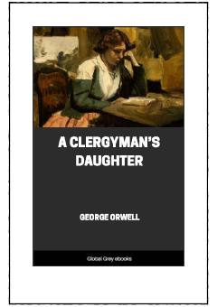

ACRuhoniy qizi Doroti hayotining murakkab sinovlari haqida klassik roman.
Bu roman Doroti Xer ismli ruhoniy qizining hayotini tasvirlaydi. U otasiga va cherkov ishlariga bag'ishlangan, lekin ichki ziddiyatlar va hayotning og'ir sinovlari bilan kurashadi. Jorj Oruell 1935-yilda yozgan bu asarda diniy va ijtimoiy mavzular chuqur o'rganiladi.